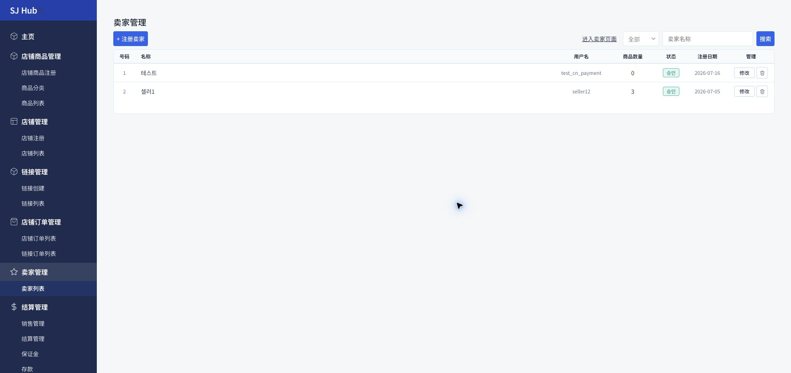

내 상점·링크에서 상품을 판매하는 셀러 계정을 조회하고, 새 셀러를 등록하거나 상태를 확인합니다.

1
2
실제 관리자 화면입니다. 컬럼에 수수료 항목이 없다는 점에 주목하세요.
사용 방법
1
신규 셀러 등록
"+ 셀러등록" 버튼으로 새 셀러 계정을 만듭니다. 등록한 셀러는 상품 등록 시 판매자로 지정할 수 있습니다.
2
상태별로 조회
전체/승인/신청중/정지 탭으로 처리 상태별 셀러를 확인합니다.
3
상품수량으로 활동 파악
각 셀러가 등록한 상품 수를 목록에서 바로 확인하고, "수정"으로 정보를 변경합니다.
💡 셀러가 등록한 상품은 상품 목록이나 링크 목록에서 "판매자" 필터로도 확인할 수 있습니다.
⚠️ 이 화면에는 수수료 항목이 없습니다. 셀러 수수료는 셀러 계정 자체가 아니라 상품 등록 화면에서 상품마다 개별로 설정됩니다. 같은 셀러라도 상품에 따라 수수료율이 다를 수 있으니, 정산 금액이 예상과 다르면 이 화면이 아니라 해당 상품의 등록 정보를 먼저 확인하세요.